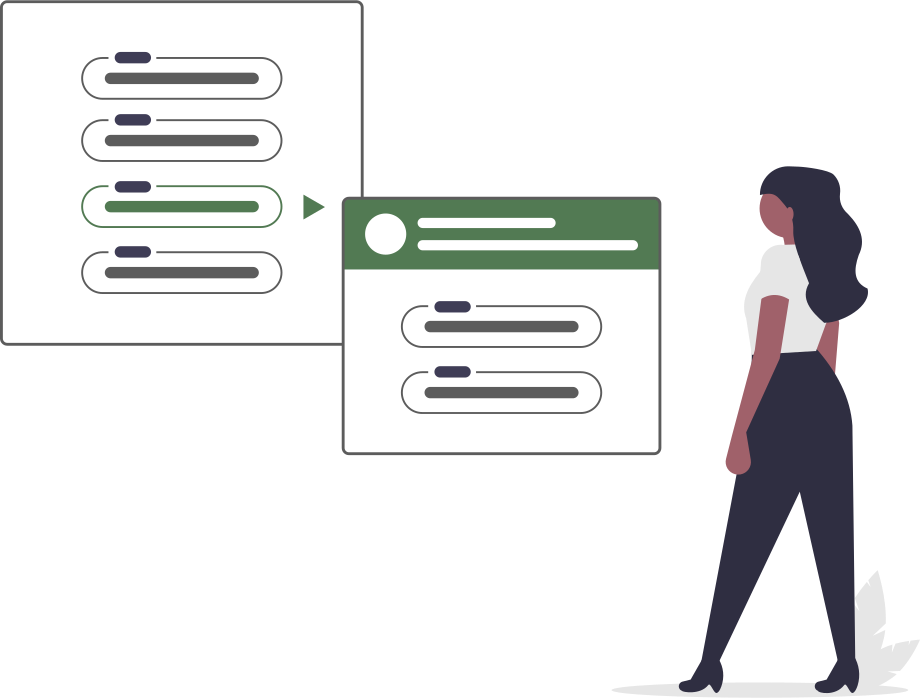
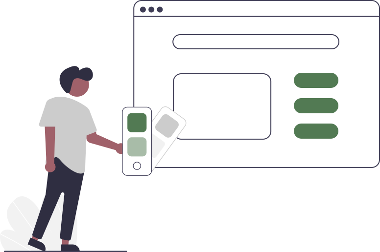
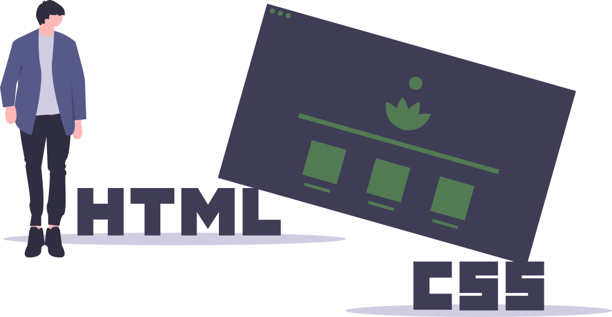
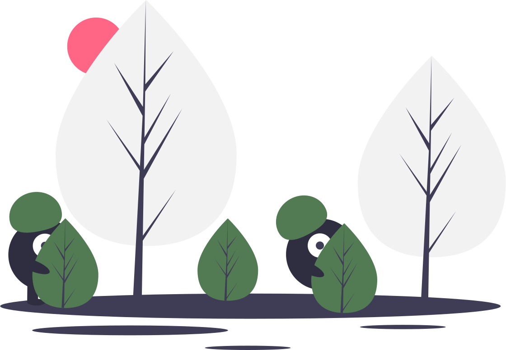
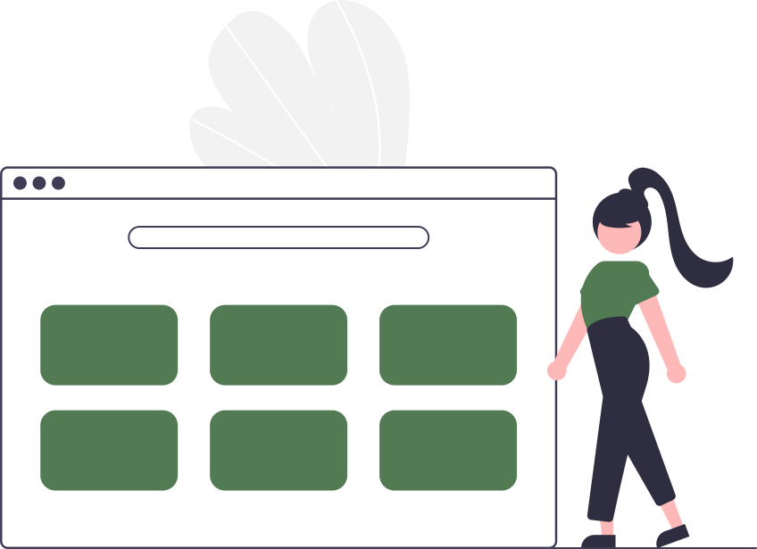
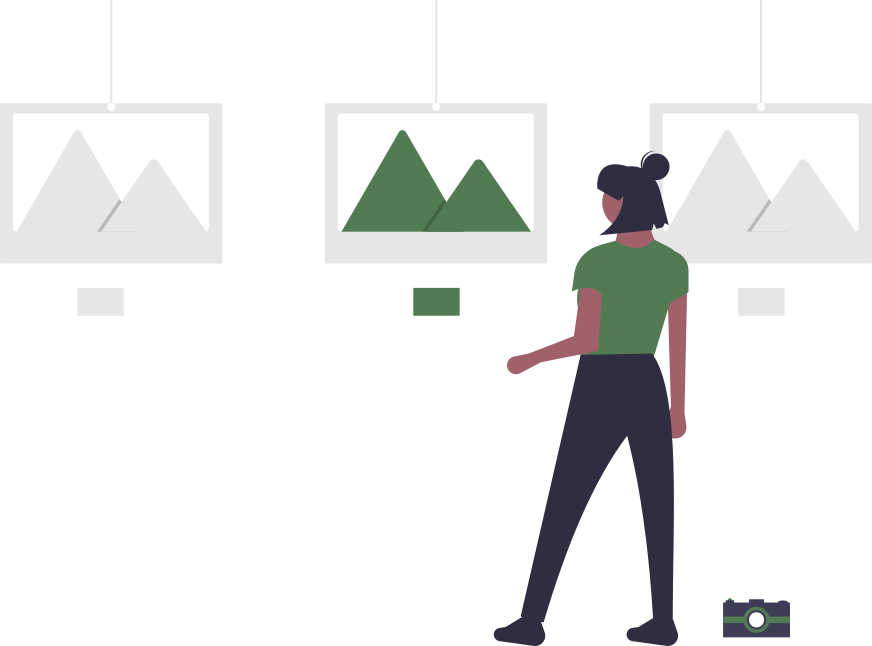
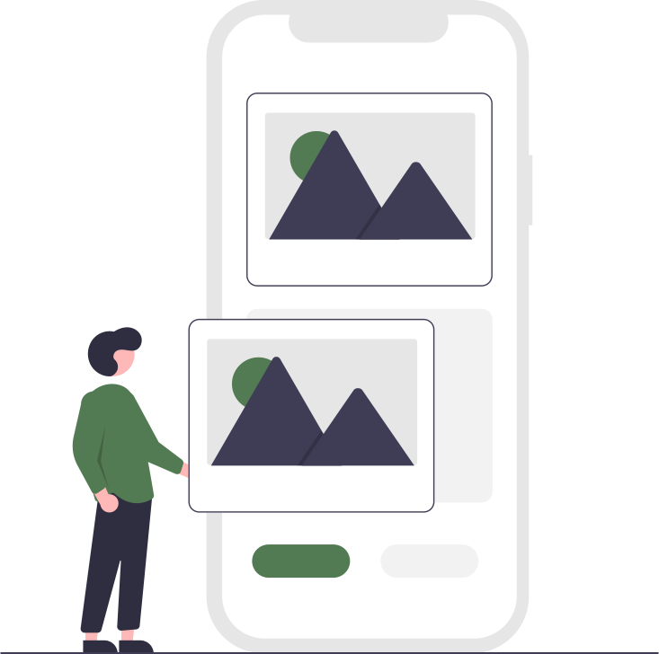
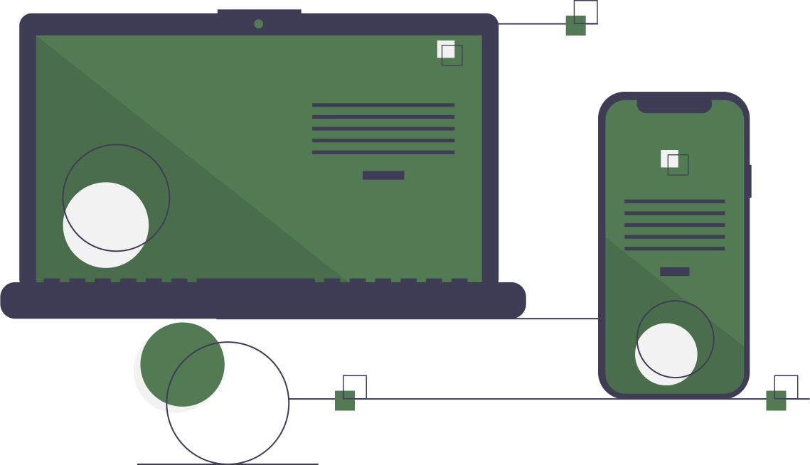

UT2 - Uso de estilos. Prácticas


Práctica colores, fondo y bordes
Práctica de colores RGB, imágenes de fondo fijas y bordes redondeados.
Ir »


Práctica visibilidad
Práctica para ver las diferencias entre display:none and visiblity: hidden.
Ir »

Práctica con display flex y flex
Práctica para entender las propiedades básicas de un contendor flexible.
Ir »



